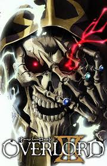
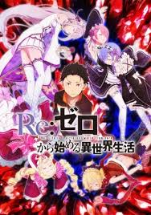
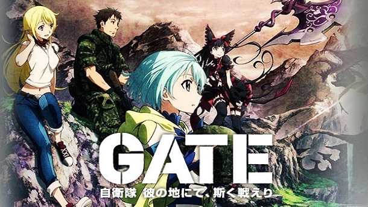
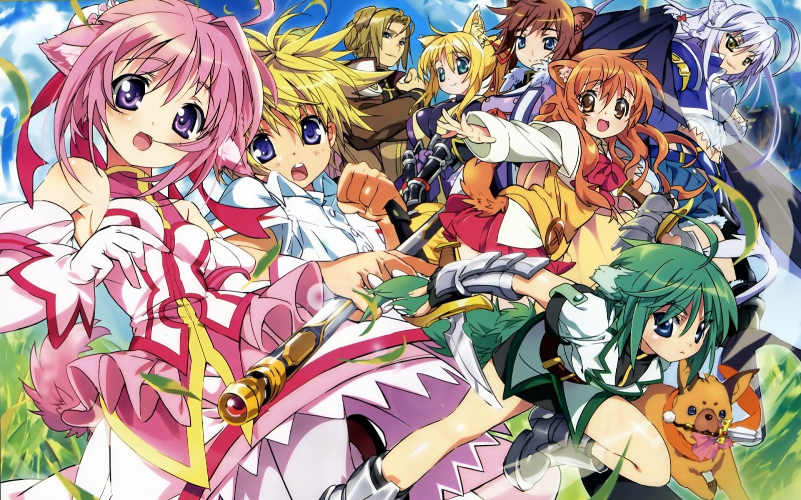

HGanime
5 melhores anime isekai
Overlord
Sinopse
Um homem decide não deslogar quando um VRMMORPG antigo é fechado e como consequência ele é transportado para o jogo. Com apenas ele ali e sem uma família para se preocupar ele começa a tentar dominar o mundo do jogo, aonde os NPCs estão mudando pouco a pouco e começando a sentir emoções humanas.
Trailer
Re:Zero
Sinopse
Natsuki Subaru, um adolescente comum, conhece uma linda garota de cabelos prateados vinda de outro mundo. Subaru quer ficar ao lado dela, mas o fardo que ela carrega é maior do que Subaru pode imaginar. Eles enfrentam o feroz ataque de monstros, traições, violência irracional… e, por fim, a morte. Subaru promete derrotar qualquer inimigo, qualquer destino, tudo para protegê-la. E assim, o pobre garoto sem poder algum obtém o “Retorno da Morte”, uma habilidade única que permite ao usuário voltar no tempo ao morrer. Usando esse poder, o passado é perdido e as memórias são reescritas.
Trailer
Gate
Sinopse
Um portal aparece no distrito de Ginza, em Tóquio, em pleno século 21. Monstros surgem por esse portal, além de cavaleiros da Idade Média europeia e outros seres de histórias de fantasia, os quais matam muitos civis de Tóquio. Este acontecimento ficou conhecido como Caso de Ginza. O governo envia um pequeno grupo de soldados das Forças de Defesa Japonesa pelo portal para o outro mundo. Liderado pelo soldado otaku Youji, eles descobrem que as pessoas dali estão sendo atacadas por um dragão. Uma garota elfa, sobrevivente do ataque do dragão, se junta ao grupo que viajará pelo perigoso e novo mundo.
Trailer
Tate no yuusha no nariagari

Sinopse
Iwatani Naofumi, um otaku como qualquer outro, encontra um livro numa biblioteca que o transporta para outro mundo. Ele recebe a missão de se tornar o Herói do Escudo, um dos Quatro Heróis Cardinais que enfrentará as Ondas de Catástrofe ao lado dos Heróis da Espada, Lança e Arco. Empolgado com as aventuras, Naofumi sai em missão com sua equipe. Contudo, alguns poucos dias depois, ele é traído e perde todo o seu dinheiro, dignidade e respeito. Será que ele vai encontrar uma saída dessa situação desesperadora?

Trailer
Dog Days
Sinopse
A história se passa num mundo de fantasia medieval habitado por gente que tem orelhas de animais e existem dois países em plena guerra. Já sabendo que o reino Biscotti não consegue resistir mais à invasão do reino vizinho Galette, a princesa Millefiore decide invocar o herói de outro mundo. Quem acabou sendo escolhido foi Sink Izumi, um garoto normal que estuda e vive na Terra. Com as técnicas que Sink aprendeu do circo, será que conseguirá cumprir o seu dever de “herói” salvando o reino e a princesa do perigo?
Trailer